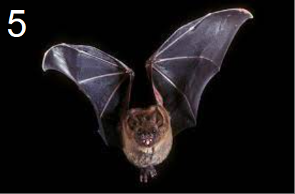
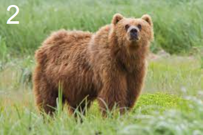
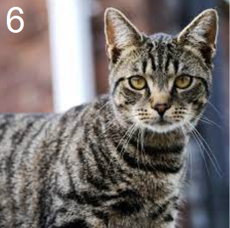
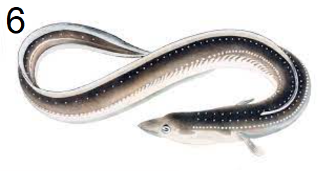
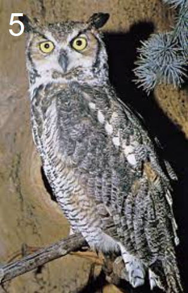
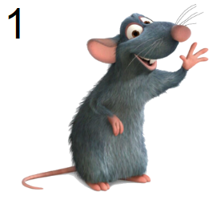
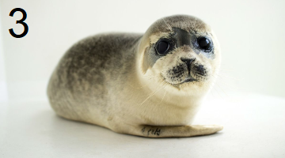

Animals
I wanted to get wed, but an ant got in the way!
Goddess of pop less pricey
Lacking the necessary power, authority, or means, too painful or unpleasant to continue to experience
A plant was closed tightly again
A baked dish is someone who commits robbery
What they say a fox is at a snail's pace
A country in Europe self-employed
Met specifications involving many different and confusing aspects
Animal with antlers is someone who argues about a subject formally







Hints